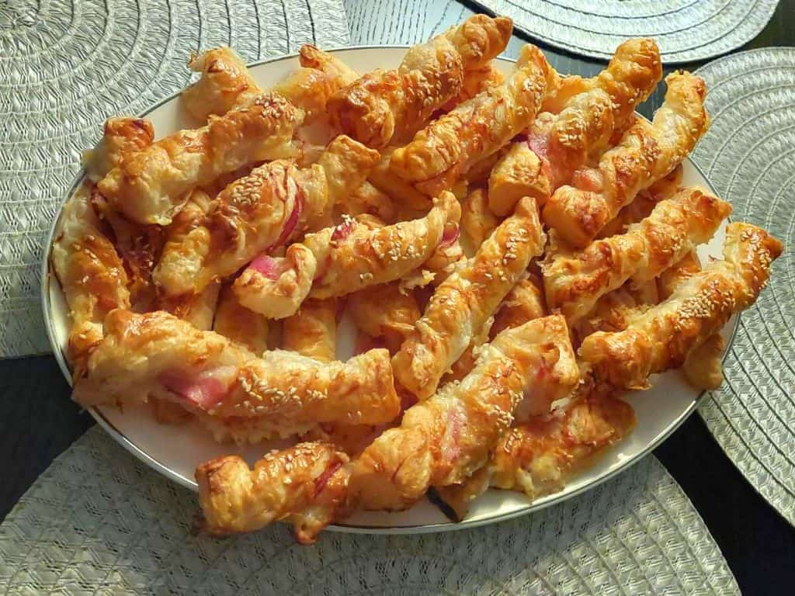

Hozzávalók
- 2 téglalap alakú leveles tészta lap
- 1 tojás
- Reszelt sajt
- Szezámmag
- Frankfurti kolbász
- kolbász
- Édes sonka
- Szalonna
- Szeletelt sajt
Van néhány könnyű és változatos előételek amelyeket nagyon jó felkészülni bulikon vagy különleges alkalmakkor. Sokféle tölteléket elkészíthetünk, a leveles tészta nagyon sokoldalú és nagyon jó sok összetevővel, itt hagylak a legismertebbnek.